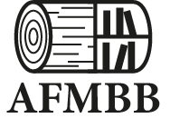
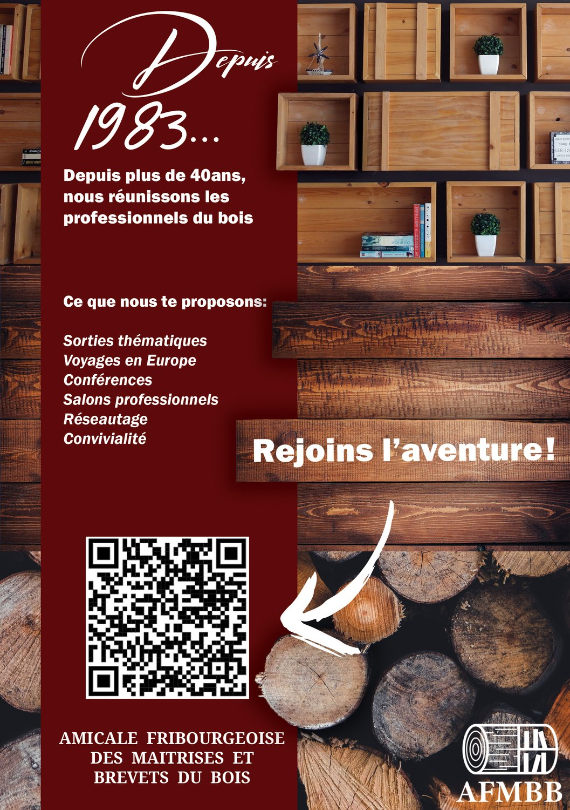
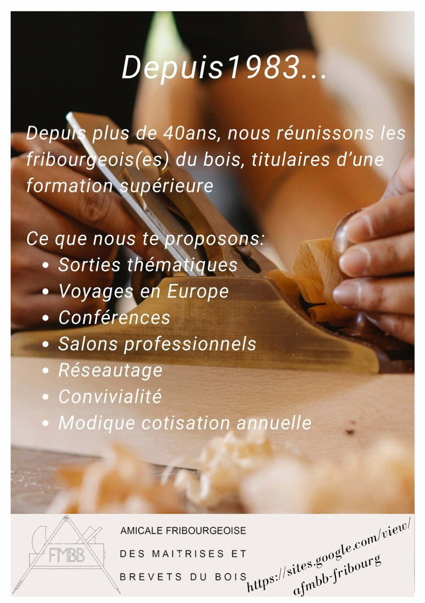
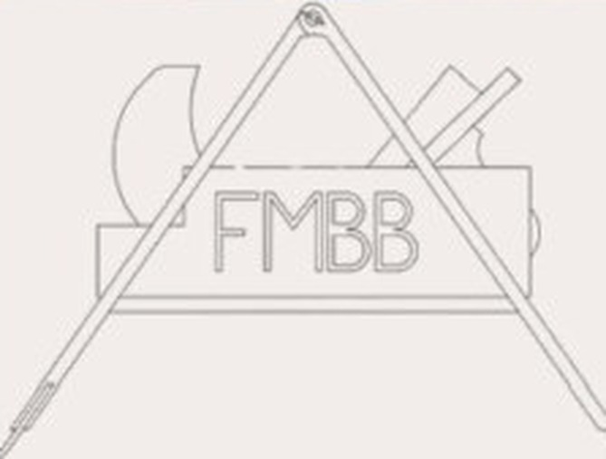
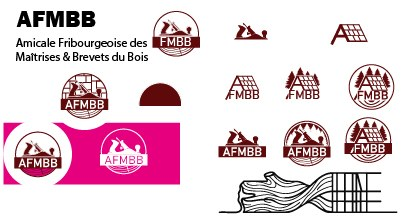
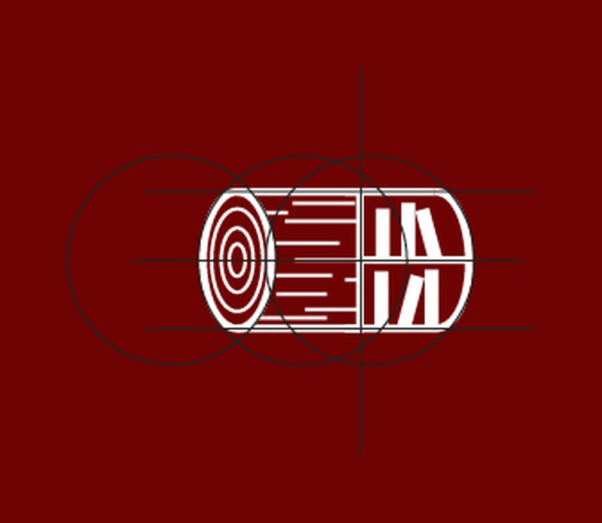
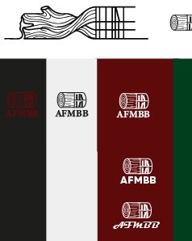

01 Identité visuelle
AFMBB
L'Amicale Fribourgeoise des Maîtrises & Brevets du Bois réunit depuis 1983 les professionnels fribourgeois du bois titulaires d'une formation supérieure : bûcherons, charpentiers, menuisiers et bien d'autres corps de métier. Après quarante ans, leur communication avait vieilli et ne leur ressemblait plus. Ils cherchaient un rebranding, quelqu'un de chez eux me connaissait.


02 Le point de départ
Un logo, tous les métiers.
J'avais carte blanche, avec une seule demande : que le logo rappelle tous les métiers du bois. C'est là que ça se complique. Un logo doit choisir une image, et chaque image du bois appartient déjà à quelqu'un : la hache au bûcheron, la charpente au charpentier, l'établi au menuisier. Choisir, c'était mettre les autres derrière.
Leur communication d'alors racontait le même problème autrement : du texte blanc posé directement sur une photographie d'atelier, illisible dès que le fond s'éclaircit, et un logo au trait si fin qu'il s'efface en petit. Rien là-dedans ne disait une association de métiers suisses installée depuis 1983.


Un compas ouvert formant le « A », posé sur un rabot, avec FMBB au centre. La construction est maligne, mais elle nomme deux métiers et laisse tous les autres dehors. Et le tracé en filet fin disparaît dès qu'on réduit.
03 La recherche
Chaque piste choisissait un métier

Pistes explorées, avant le rondin
Des toits et des charpentes, des sapins, des montagnes, un homme qui scie un tronc. Chaque proposition tenait debout toute seule, et chaque proposition racontait un métier en laissant les autres dehors. C'est exactement ce que l'amicale ne voulait pas.
Le déclic est venu en arrêtant de chercher un symbole et en cherchant un trajet : la matière part de l'arbre et finit en objet, et tous les métiers sont quelque part sur ce trajet. Un rondin, si on le regarde dans le sens de la longueur, contient déjà le début et la fin de cette histoire.
04 Le logo
Un rondin qui se lit de gauche à droite

Construction, trois cercles et deux axes
À gauche, les cernes de croissance : l'arbre sur pied, la forêt, le geste du bûcheron. Au milieu, les lignes du fil du bois : la grume qui se débite, la planche. À droite, la même silhouette devient une étagère : l'objet fini, le charpentier et le menuisier. Une seule forme continue, et personne devant les autres.
Le détail qui ferme le récit : l'étagère est remplie de livres. L'amicale ne réunit pas tous les professionnels du bois, seulement les titulaires d'une maîtrise ou d'un brevet. Les livres disent ça, la qualification, le savoir qui se range et se transmet.
La silhouette est posée sur trois cercles qui se recouvrent et deux axes. C'est ce qui lui donne sa régularité et ce qui lui permet de rester lisible une fois réduite, là où l'ancien logo se perdait.
C'est la pièce qui a demandé le plus d'allers-retours de tout le projet. Le flyer, ensuite, est passé presque du premier coup.
05 Le système
Trois couleurs, quatre verrouillages

Planche de déclinaisons
Le logo existe en symbole seul, en verrouillage avec le wordmark sérif, en version manuscrite et en pastille ronde portant le nom complet en circulaire, pour les formats où le rectangle ne passe pas.
Le sérif à fort contraste du wordmark n'est pas un hasard : il donne à une association de 1983 l'autorité qu'un sans-serif lui aurait retirée. Et trois couleurs suffisent : le bordeaux qui signe, le noir qui lit, le blanc cassé qui fait respirer.

06 Le flyer
Le même contenu, enfin lisible
Les textes viennent d'eux, je les ai gardés. Ce que j'ai changé, c'est l'endroit où ils se posent : un bandeau bordeaux plein à gauche, qui tient toute l'information, et la photographie à droite qui montre le bois sans jamais passer sous le texte. L'appel à l'action, « Rejoins l'aventure ! », est de moi, posé sur une planche comme une enseigne d'atelier.
07 Le résultat
Ce que le projet a donné
L'amicale est très satisfaite du travail, et utilise le logo aujourd'hui.
Ma première expérience professionnelle avec une entreprise, du premier contact à la livraison. Elle s'est bien passée.
Qu'un logo qui doit représenter tout le monde ne se règle pas en cherchant un symbole de plus, mais en changeant la question qu'on se pose.